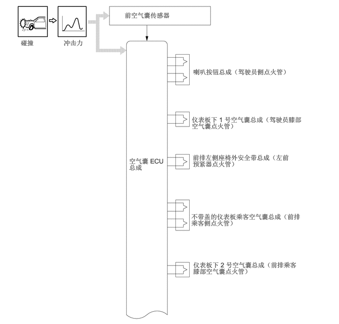
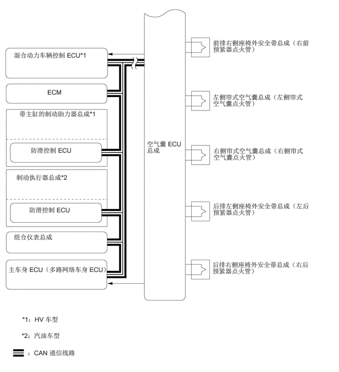
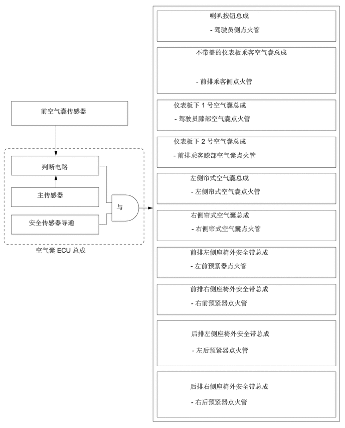
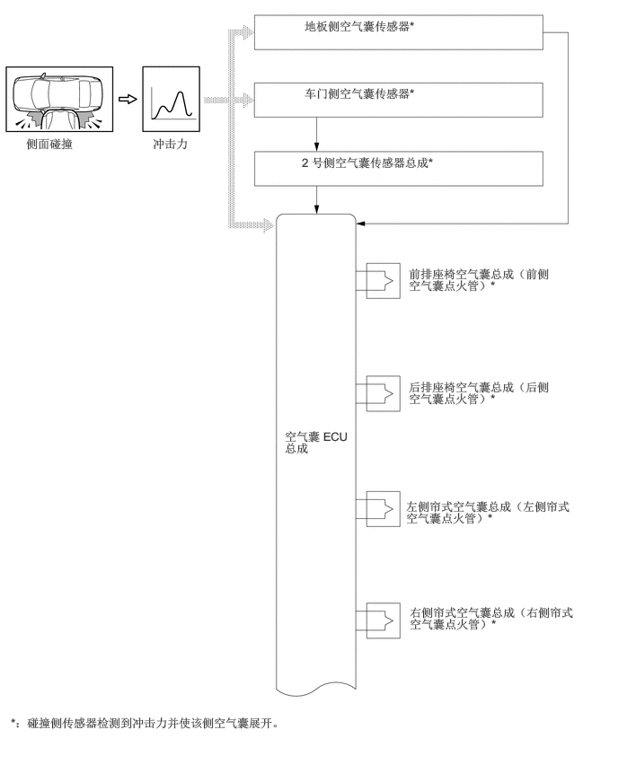
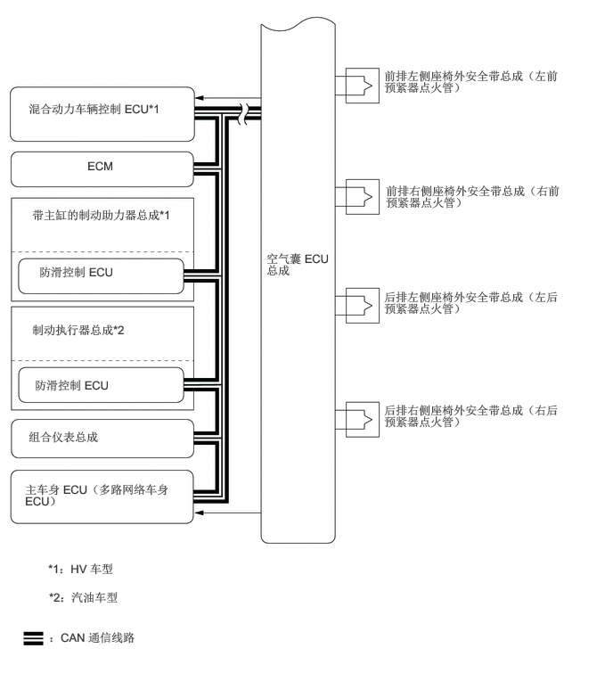
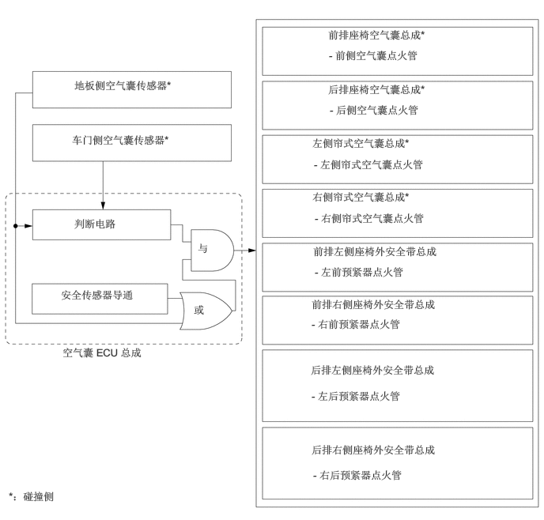
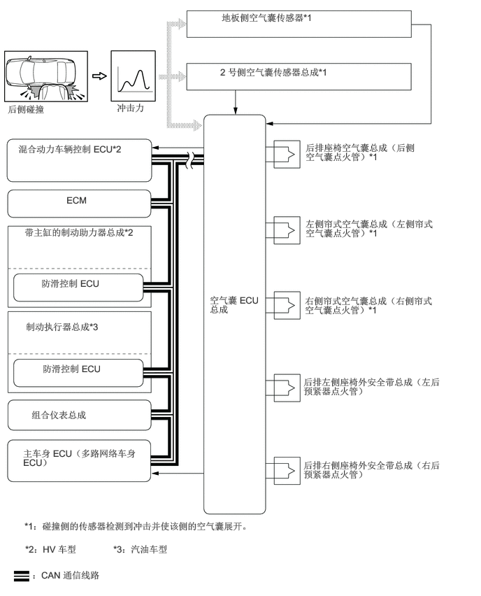
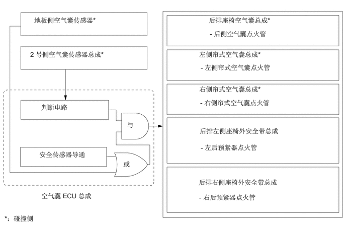
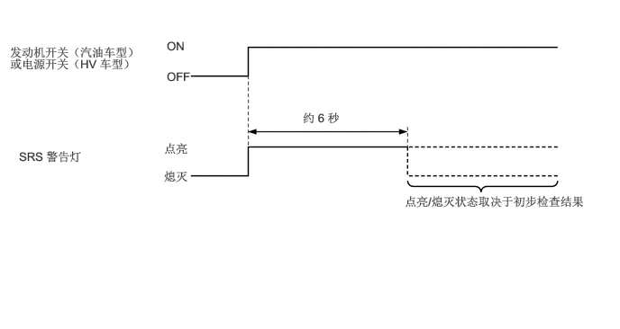

主要零部件的功能
空气囊系统的主要零部件具有下列功能：
| 零部件 | 功能 | |
|---|---|---|
|
*1：HV 车型 *2：汽油车型 |
||
| 空气囊 ECU 总成 | ·
发生正面碰撞时，空气囊 ECU 总成接收来自内置于空气囊总成的前空气囊传感器或主传感器的信号。空气囊 ECU 总成通过其判断电路接收信号，并接收来自内置于空气囊 ECU 总成的安全传感器的另一信号。接收到来自内置于空气囊 ECU 总成的安全传感器、至少一个前空气囊传感器和主传感器的信号后，空气囊 ECU 总成判定是否应展开驾驶员空气囊、前排乘客空气囊、驾驶员膝部空气囊、前排乘客膝部空气囊以及帘式空气囊，以及是否应激活前排座椅安全带预紧器和后排座椅安全带预紧器。空气囊 ECU 总成也可诊断系统故障。 ·
发生侧面碰撞或后侧碰撞时，空气囊 ECU 总成接收来自车门侧空气囊传感器、地板侧空气囊传感器或 2 号侧空气囊传感器总成的信号。空气囊 ECU 总成通过其判断电路接收车门侧空气囊传感器、地板侧空气囊传感器或 2 号侧空气囊传感器总成信号，同时接收来自内置于空气囊 ECU 总成的地板侧空气囊传感器或安全传感器的其他信号。接收到来自一个以上侧传感器、任一安全传感器（内置于空气囊 ECU 总成的地板侧空气囊传感器或安全传感器）的信号后，空气囊 ECU 总成判定是否应展开前排座椅空气囊、后排座椅空气囊和帘式空气囊，以及是否应激活前排座椅安全带预紧器和后排座椅安全带预紧器。空气囊 ECU 总成也可诊断系统故障。 ·
通过控制器区域网络 (CAN) 将碰撞检测信号发送至 ECM 以操作燃油泵控制。 ·
将碰撞检测信号发送至主车身 ECU （多路网络车身 ECU）以运行碰撞门锁解锁功能。 ·
将指示发生碰撞的信号通过 CAN 通信发送至主车身 ECU （多路网络车身 ECU）以点亮车内照明灯。 ·
将制动控制请求信号通过控制器区域网络 (CAN) 发送至防滑控制 ECU 以运行二次碰撞制动。 ·
将碰撞检测信号发送至混合动力车辆控制 ECU 以切断混合动力系统的电源。*1 |
|
| 喇叭按钮总成 | 可作为座椅安全带的辅助装置，有助于减少对乘员的冲击。 | |
| 不带盖的仪表板乘客空气囊总成 | ||
| 仪表板下 1 号空气囊总成 | ||
| 仪表板下 2 号空气囊总成 | ||
| 前排左侧/右侧座椅空气囊总成 | ||
| 后排左侧/右侧座椅空气囊总成 | ||
| 左侧/右侧帘式空气囊总成 | ||
| 螺旋电缆分总成 | 将来自空气囊 ECU 总成的点火信号传输至 SRS 驾驶员空气囊。 | |
| 左前/右前空气囊传感器 | 发生正面碰撞时，根据车辆减速度，传感器内发生变形并转化为电信号。 | |
| 左侧/右侧车门侧空气囊传感器 | 利用压力传感器检测侧面碰撞期间的前门变形情况，并发送空气囊 ECU 总成信号，以判断是否需要展开 SRS 零部件。 | |
| 左侧/右侧地板侧空气囊传感器 | 发生侧面或后侧碰撞时，根据车辆减速度，传感器内发生变形并转化为电信号。 | |
| 左侧/右侧 2 号侧空气囊传感器总成 | 根据发生后侧碰撞期间车辆的减速，传感器内发生变形并转化为电信号。 | |
| 前排左侧/右侧座椅外安全带总成 | 有助于减少对乘员的冲击。 | |
| 后排左侧/右侧座椅外安全带总成 | ||
| 混合动力车辆控制 ECU*1 | 在碰撞期间接收来自空气囊 ECU 总成的碰撞检测信号并通过断开系统主继电器 (SMR) 切断混合动力系统电源，以确保安全。 | |
| ECM | 接收来自空气囊 ECU 总成的碰撞检测信号并停止燃油泵。 | |
| 主车身 ECU（多路网络车身 ECU） | ·
接收来自空气囊 ECU 总成的碰撞检测信号并运行碰撞门锁解锁功能。 ·
接收到来自空气囊 ECU 总成的碰撞检测信号后点亮阅读灯总成。 |
|
| 带主缸的制动助力器总成*1 | 防滑控制 ECU | 接收来自空气囊 ECU 总成的制动控制请求信号，并将制动控制信号发送至制动执行器以减小二次碰撞的损坏。 |
| 制动执行器总成*2 | ||
| 组合仪表总成 | SRS 警告灯 | 空气囊 ECU 总成检测到空气囊系统发生故障时，警告灯点亮以提醒驾驶员。 |
| 多信息显示屏 | 显示警告信息以告知驾驶员空气囊系统存在故障。 | |
| 主警告灯 | 空气囊 ECU 总成检测到空气囊系统发生故障时，警告灯点亮以提醒驾驶员。 | |
| 蜂鸣器 | 鸣响以警告驾驶员空气囊系统存在故障。 | |
| 网络网关 ECU | 在 CAN 通信间传输信号。 | |
系统控制
正面碰撞的空气囊
如果发生正面碰撞，则有 6 个空气囊展开：喇叭按钮总成、不带盖的仪表板乘客空气囊总成、仪表板下 1 号空气囊总成、仪表板下 2 号空气囊总成和帘式空气囊总成。这些空气囊同时展开。喇叭按钮总成和不带盖的仪表板乘客空气囊总成使用双级控制。此外，还激活前排座椅外安全带总成所包含的各前预紧器以及后排座椅外安全带总成所包含的各后预紧器。
空气囊 ECU 总成检测下表所示的来自各种来源的信息，以激活双级控制。
| 空气囊 | 信息 | 来源 |
|---|---|---|
| 驾驶员 | 冲击程度 | ·
左前或右前空气囊传感器 ·
空气囊 ECU 总成 |
| 前排乘客 | 冲击程度 | ·
左前或右前空气囊传感器 ·
空气囊 ECU 总成 |
发生正面碰撞时，如果前空气囊传感器检测到冲击，则其将告知空气囊 ECU 总成。空气囊 ECU 总成使喇叭按钮总成、不带盖的仪表板乘客空气囊总成、仪表板下 1 号空气囊总成，仪表板下 2 号空气囊总成和帘式空气囊总成展开。此外，空气囊 ECU 总成激活驾驶员、前排乘客和后排乘客的座椅安全带预紧器。


用于空气囊系统的减速度传感器安装在车辆的各种部件上，并计算各部件在碰撞过程中的减速度（或加速度）。
空气囊 ECU 总成基于实际情况并根据来自各传感器的信息，向各空气囊和预紧器发送展开信号。
根据来自空气囊 ECU 总成及前空气囊传感器的信息，产生正面碰撞信号。如下表所示，正面碰撞信号用于展开所有空气囊（除所有侧空气囊外）并激活所有预紧器。

侧面/后侧碰撞的空气囊
发生严重侧面碰撞时将展开 4 个空气囊：前排座椅空气囊总成、后排座椅空气囊总成和帘式空气囊总成。这些空气囊同时展开。此外，前排座椅安全带预紧器和后排座椅安全带预紧器也同时激活。
对于侧面碰撞，如果车门侧空气囊传感器和地板侧空气囊传感器检测到冲击，其将告知空气囊 ECU 总成，并且空气囊 ECU 总成使前排座椅空气囊总成、后排座椅空气囊总成和帘式空气囊总成同时展开，并激活前排座椅安全带预紧器和后排座椅安全带预紧器。


根据来自车门侧空气囊传感器、地板侧空气囊传感器和空气囊 ECU 总成的信号，展开前排座椅空气囊总成、后排座椅空气囊总成和帘式空气囊总成，并激活前排座椅外安全带总成内的各前预紧器和后排座椅外安全带总成内的各后预紧器。

对于后侧碰撞，如果 2 号侧空气囊传感器总成和地板侧空气囊传感器检测到冲击，其将告知空气囊 ECU 总成，并且空气囊 ECU 总成使后排座椅空气囊总成和帘式空气囊总成同时展开，并激活后排座椅安全带预紧器。

根据来自 2 号侧空气囊传感器总成、地板侧空气囊传感器和空气囊 ECU 总成的信号，展开后排座椅空气囊总成和帘式空气囊总成，并激活后排座椅外安全带总成内的各后预紧器。

初步检查照明控制
将发动机开关（汽油车型）或电源开关（HV 车型）置于 ON (IG) 位置后，空气囊 ECU 总成点亮组合仪表总成上的 SRS 警告灯约 6 秒并执行初步检查。初步检查期间，禁止空气囊点火并对空气囊 ECU 总成进行诊断。如果在初步检查期间检测到故障，则即使在 6 秒过后 SRS 警告灯仍点亮。

失效保护
如果空气囊 ECU 总成检测到空气囊系统出现故障，则其点亮 SRS 警告灯和主警告灯，并在多信息显示屏上显示警告信息并鸣响蜂鸣器以警告驾驶员故障。
诊断
如果空气囊 ECU 总成检测到空气囊系统出现故障，则其将故障数据以诊断故障码 (DTC) 的形式存储到存储器中。
空气囊 ECU 总成将故障数据和 5 位数诊断故障码 (DTC) 输出至 Global TechStream (GTS)。
将 Global TechStream (GTS) 连接到 DLC3 上可读取 5 位数 DTC。有关详情，请参考修理手册。
如果 SRS 空气囊展开，则空气囊 ECU 总成将点亮 SRS 警告灯。但是，与一般故障不同的是不存储 DTC。无法手动熄灭 SRS 警告灯。必须用新的空气囊 ECU 总成进行更换。